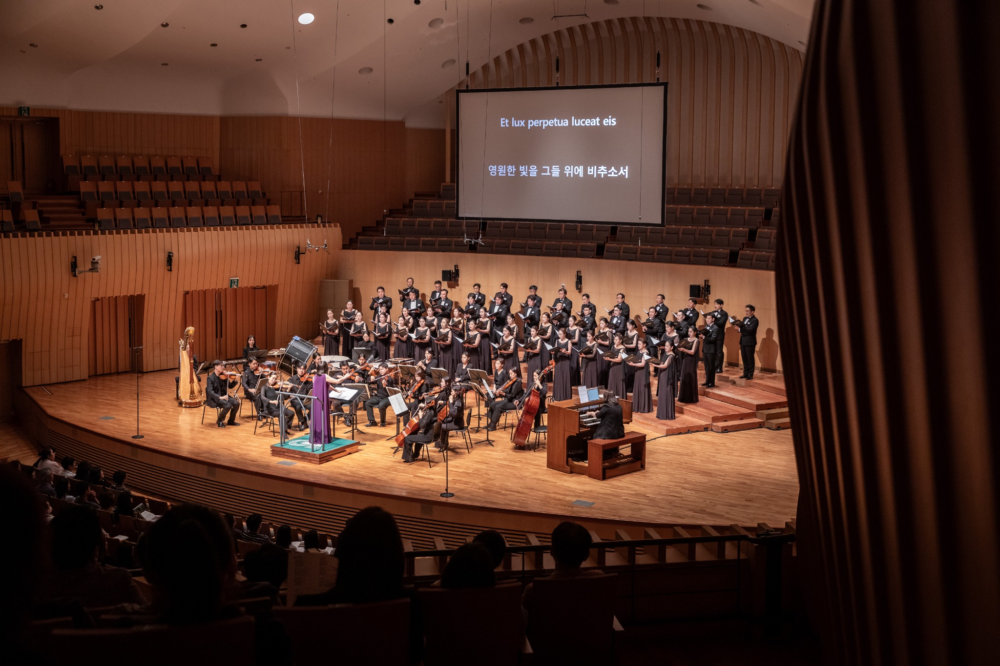

オーケストラ紹介
Orchestra Lartife

Orchestra Lartife は2024年に創立されたプロフェッショナル・オーケストラです。韓国国内外の主要な市立・プロオーケストラで活躍する演奏家によって構成されています。
クラシック音楽の本質と深みに根ざし、観客とより身近に呼吸する舞台を目指しています。伝統的なレパートリーから現代的な感性を生かした企画公演まで幅広く取り上げ、誰もがクラシック音楽を自然に理解し楽しめる公演文化を育んでいます。
仁川市立合唱団、水原市立合唱団をはじめとする韓国の主要芸術団体との共演を通じて高い音楽性を評価されてきました。室内楽から大編成オーケストラ、合唱団やバレエ団との協働まで、多様な芸術分野とともに新たな音楽の可能性を広げています。
指揮者・金判周の芸術的リーダーシップのもと、Orchestra Lartife は単なる演奏を超え、人と芸術をつなぐ舞台を創造します。伝統と革新が共存する公演を通して、音楽が暮らしの中へ自然に溶け込む瞬間を生み出すことを目指しています。
2024Founded
40+Professional Musicians
10+Performances